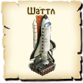

Получено: файл; исходный URL. Первая иллюстрация строки каталога; авторство не подтверждено. Идентичность изображения при замене домена не проверена. Страница: источник.

Шаттл
браузерная версия; платформа и дата редакции не установлены- Тип
- Постройка
- Версия и дата
- браузерная версия; платформа и дата редакции не установлены
Данные по источнику · браузерная версия; платформа не установлена · дата редакции списка не установлена
Предварительно: Прочитан список. Имена файлов пиктограмм приводятся как есть: они не гарантируют идентификацию материала. Alt-атрибуты источника содержат ошибки. Отдельная статья и дата не проверены.. Требуется сверка.
- Сведения из списка, включая имена файлов пиктограмм
- [рисунок: shattl.png] Стадии строительства: 1. 01 [рисунок: penoplast.png] + 05 [рисунок: Siniy_plastilin.png] + 05 [рисунок: Prugina.png] 2. 05 [рисунок: folga.png] + 02 [рисунок: Rezina.png] + 25 [рисунок: drova.png] 3. 01 [рисунок: mikroshema.png] + 05 [рисунок: Zelyoniy_plastilin.png] + 10 [рисунок: Neft.png] Даёт возможность: путешествовать на остров огромной елки: [рисунок: Ostrov_Ogromnoy_elki.png] 02 [рисунок: drova.png] +02 [рисунок: voda.png] +0 2 [рисунок: Brevna_pal-my.jpg]
Данные по источнику · историческая браузерная игра, площадка не указана · 05.05.2012 — дата публикации; дата редакции неизвестна
Предварительно: Сопоставлено по единственному точному названию; различные версии или одноимённые объекты могут различаться. Названия файлов и alt пиктограмм сохранены как подписи, не заменяют проверенную расшифровку; изображения и цены требуют ручной сверки. Независимость от zombi-ferma.ru и других сайтов не установлена.. Требуется сверка.
- Текст и пиктограммы источника
- [изображение: m_discovery.png] Стадии строительства: 1. 01 [изображение: Пенопласт; penoplast.png] + 05 [изображение: Синий пластилин; Siniy_plastilin.png] + 05 [изображение: Пружина; Prugina.png] 2. 05 [изображение: Фольга; folga.png] + 02 [изображение: Резина; Rezina.png] + 25 [изображение: Дрова; drova.png] 3. 01 [изображение: Микросхема; mikroshema.png] + 05 [изображение: Зелёный пластилин; Zelyoniy_plastilin.png] + 10 [изображение: Нефть; Neft.png] Даёт возможность: путешествовать на остров огромной елки: 02 [изображение: drova.png] +02 [изображение: voda.png] +0 2 [изображение: Brevna_palmy.png]
Связанные сущности
нет проверенных связей — требуется сверка.